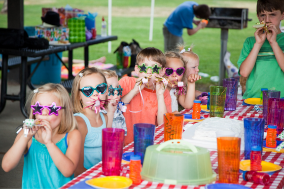
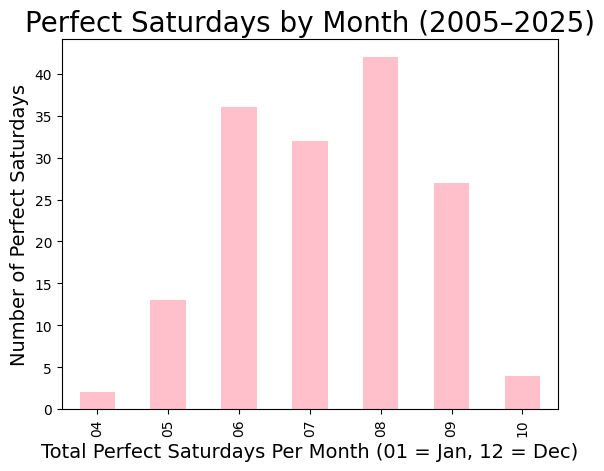

import pandas as pd
import numpy as np
import matplotlib.pyplot as plt
sample_df = pd.read_csv('philadelphia_weather_2005_to_2025.csv')Introduction

Whether you’re planning your wedding, birthday party, baby shower, or any other outdoor event, you want it to be perfect. You spend so much time planning what you can control, its always a bummer when what you can’t control ruins it: Bad weather
But never fear! After analyzing 20 years of weather data in Philadelphia, I set out to find when Mother Nature is most likely to cooperate—revealing the best Saturdays and the best months to plan an outdoor event with confidence.
So what is a Perfect Saturday?
Based on a survey from YouGov, 60% of Americans reported they beleive the perfect temperature is in the mid 70’s. So for this analysis, “perfect” temperature is defined as anywhere from 70-79 ∘F.
How many Saturdays have their been in the past 20 years?
On my mission to finding Perfect Saturdays, I first had to find how many Saturdays there have been in the past 20 years. After some evaluations, I found that there were a total of 1,096 Saturdays in the past 20 years.
amt_of_saturdays = sample_df['dow_name'] == 'Saturday'
print(amt_of_saturdays.sum())
print(f"There are {amt_of_saturdays.sum()} Saturdays in the data set.")1096
There are 1096 Saturdays in the data set.Perfect weather isn’t just temperature, it’s precipitation too.
Continuing my mission to finding the Perfect Saturday, I realized that no one wants their outdoor events to get rained or snowed on. So I filtered through the last 20 years to find only Saturdays with no precipitation. I found that there were a total of 735 Saturdays in the past 20 years that had no precipitation.
no_snow_rain = (sample_df['snow']==0) & (sample_df['rain']==0)
saturdays_no_rain_snow = no_snow_rain & amt_of_saturdays
print(saturdays_no_rain_snow.sum())735Temperatures between 70-79 ∘F!
As discussed above, a Perfect Saturday is defined as having an average temperature between 70–79°F. Using this criterion, I created a filter to pull Saturdays that fall within this ideal temperature range while also having no precipitation. The graph below visualizes how often these ideal Saturdays occur.
avg_temp_saturdays = (((sample_df['high'] + sample_df['low']) / 2 >= 70) & ((sample_df['high'] + sample_df['low']) / 2 <= 79))
perf_saturdays = saturdays_no_rain_snow & avg_temp_saturdays
months = sample_df.loc[perf_saturdays, 'date'].str[5:7]
saturday_month_counts = months.value_counts().sort_index()saturday_month_counts.plot(kind='bar', color='pink')
plt.xlabel('Total Perfect Saturdays Per Month (01 = Jan, 12 = Dec)', fontsize=14)
plt.ylabel('Number of Perfect Saturdays', fontsize=14)
plt.title('Perfect Saturdays by Month (2005–2025)', fontsize=20)
plt.show()